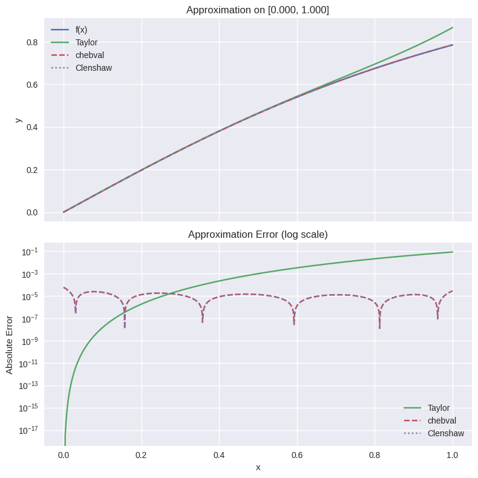
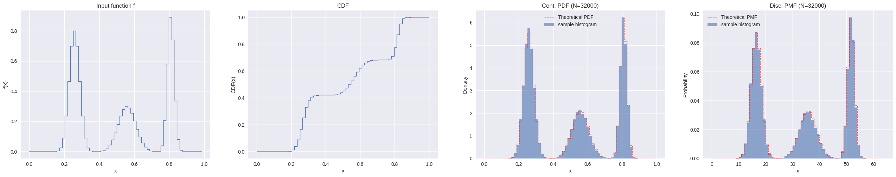
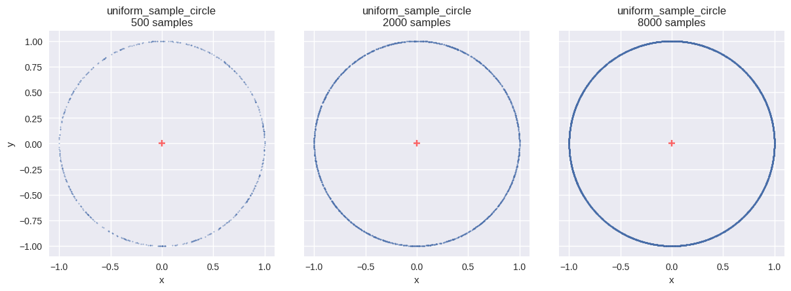
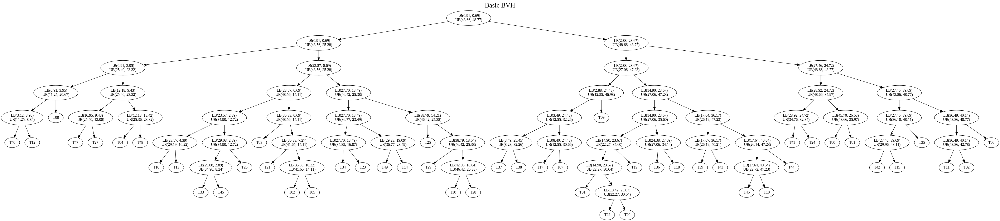
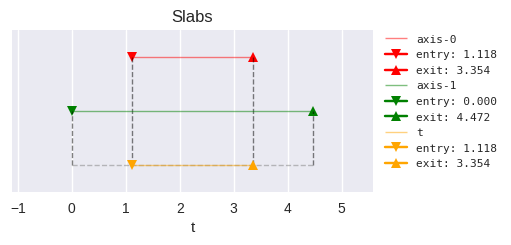
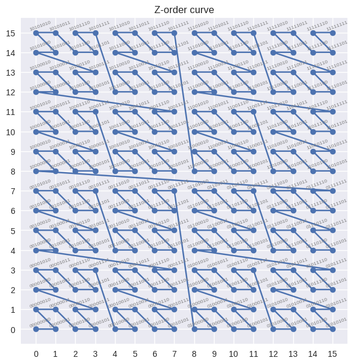
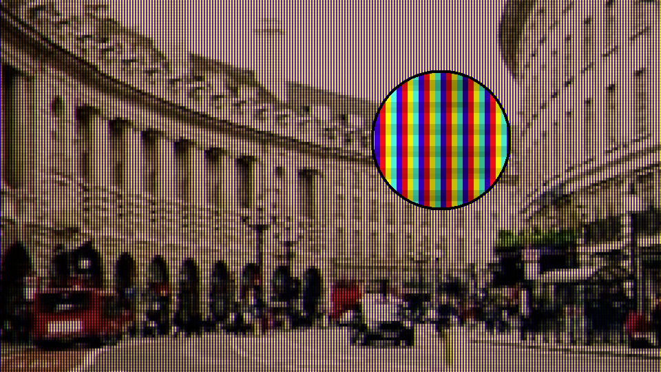
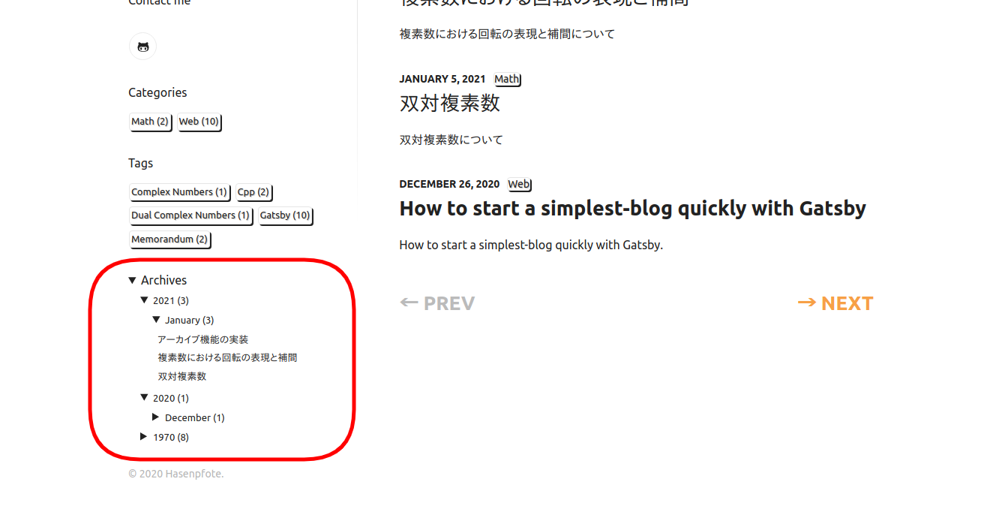
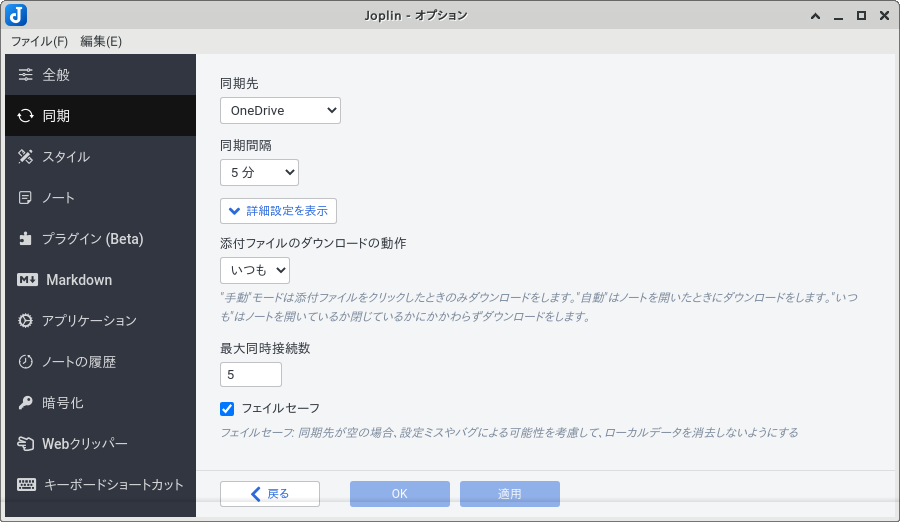
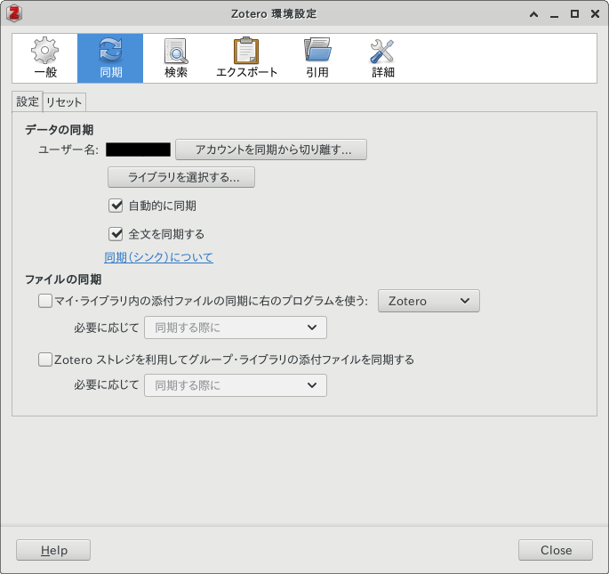

2022年に米国特許 US6867776B2 が満了し，普段使いがしやすくなった Kenneth Perlin 考案の Simplex Noise を題材に，2D のアルゴリズムを数式から整理する
2本のベクトルを混ぜたときに最も長くなる方向を、ノルム最大化と固有値問題から導出する

チェビシェフ多項式を例に Clenshaw algorithm の適用方法を説明し，Python による実装および検証を示す

区分的定数分布を用いて確率分布を近似し，効率的にサンプリングする方法を整理する

一様乱数を入力として，逆関数法により幾何学的領域上の確率分布を生成する手順を整理する

加速構造 BVH の基本的な構造と代表的な構築手法について

光線と軸平行境界ボックスの交差判定に使われるスラブ法の仕組みについて

モートン符号の基本を簡単に
確率的に処理を打ち切るロシアンルーレットという手法についての考察をする
或いは pnpm dlx と pnpm exec
鏡映を利用する方法について考察をする
Pixar の方法について考察をする
Frisvad の方法について考察をする

CRT モニタ特有の雰囲気を適用する方法について
抗えない Python3 への移行
剛体シムの最初の最初
Gatsby ブログに任意のフォントを追加する方法について

gatsby-starter-lumen にアーカイブ機能を実装
複素数における回転の表現と補間について
双対複素数について

クロスプラットフォームな Markdown 統合環境 Joplin の運用方法について

クロスプラットフォームな文献管理ソフトウェア Zotero の運用方法について
How to start a simplest-blog quickly with Gatsby
Repositories and code snippets